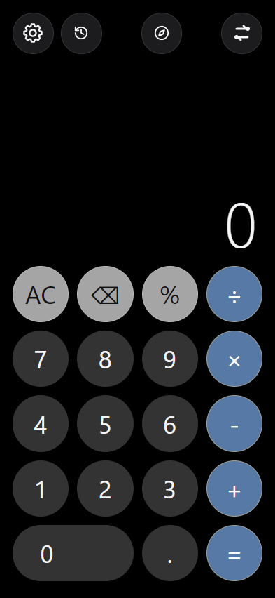
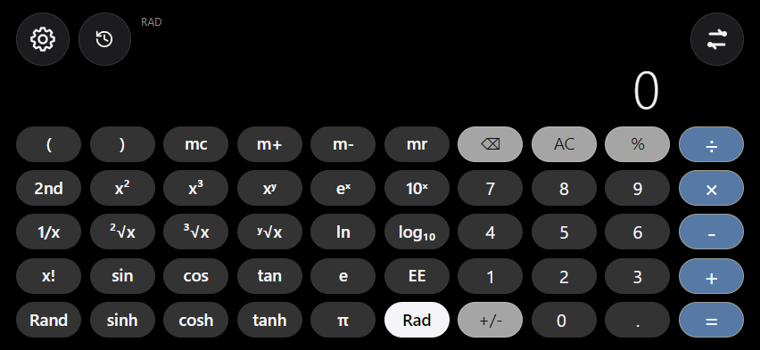
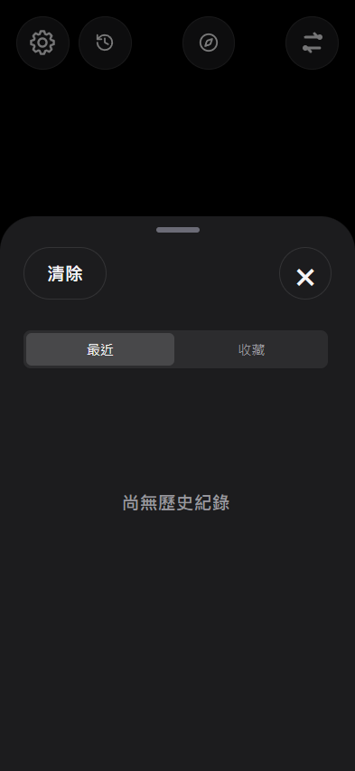
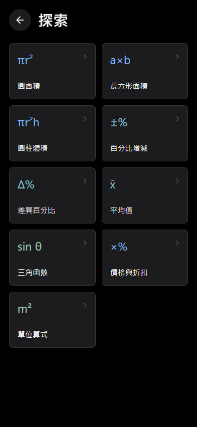
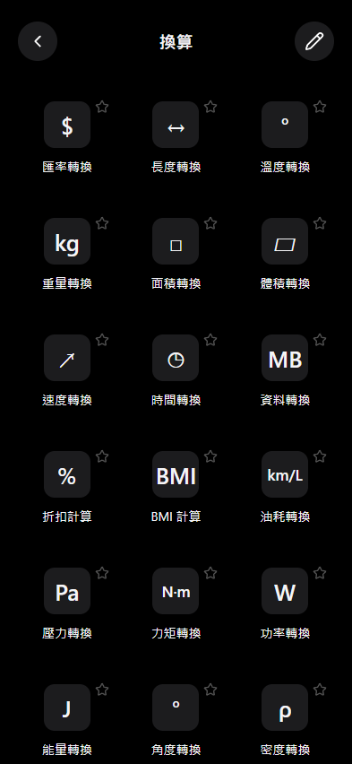
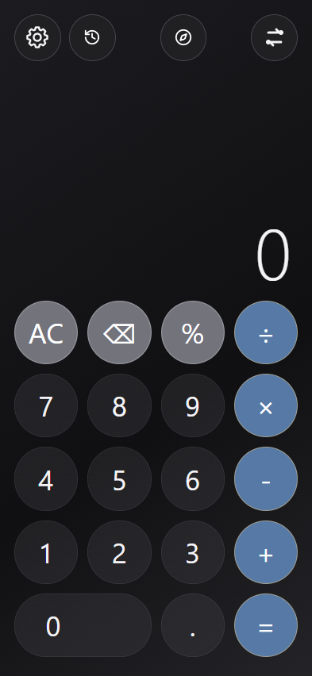
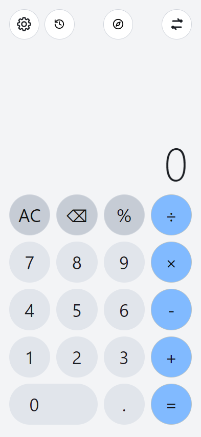

A focused calculator
Editable expressions, scientific functions, and clear error explanations.
ANDROID · NO ADS · NO SUBSCRIPTIONS
Everyday simplicity. More room to explore.
Get it on Google Play ↗
Rotate your device. A scientific calculator is already there.
MADE FOR REAL CALCULATIONS
Edit inside an expression, revisit your history, and carry a result into your next calculation.

Editable expressions, scientific functions, and clear error explanations.

Review, copy, revise, and reuse previous calculations.

Interactive formulas, reverse calculations, and scenario comparisons.
BEYOND THE ANSWER
Convert length, area, weight, temperature, energy, pressure, and more. Currency conversion keeps saved rates available offline.
Updating exchange rates requires internet. Rates are indicative, not transaction quotes.

MAKE IT YOURS
Classic, Smoked, or Pearl. Customize the accent and choose optional glass effects, sounds, speech, and haptics.


Nine interface languages. Phone and tablet layouts. Core calculations work offline.
Get it on Google Play ↗Android 7.0 or later. Speech depends on installed device voices.
ROOM TO THINK
Designed for phones and tablets, in portrait and landscape. More space for the same familiar tools.